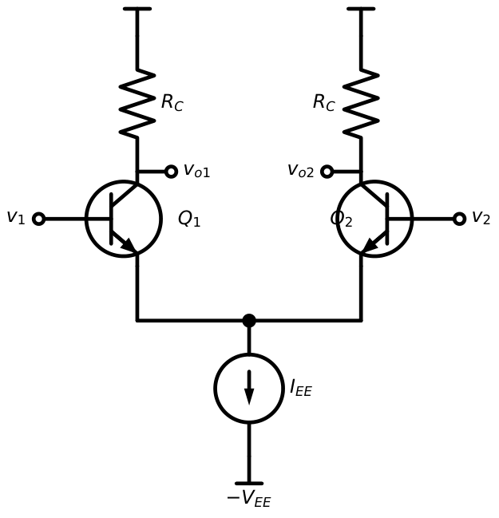
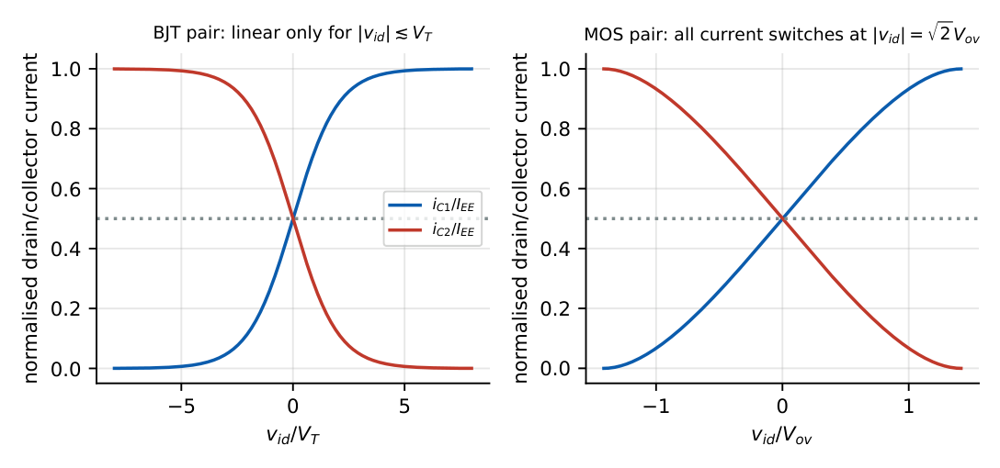
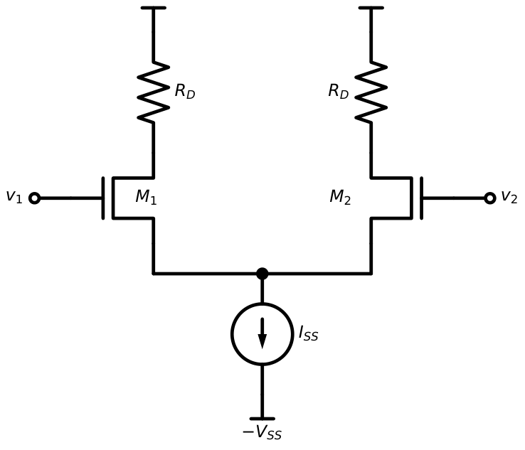
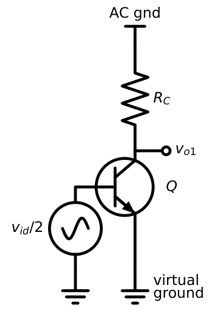
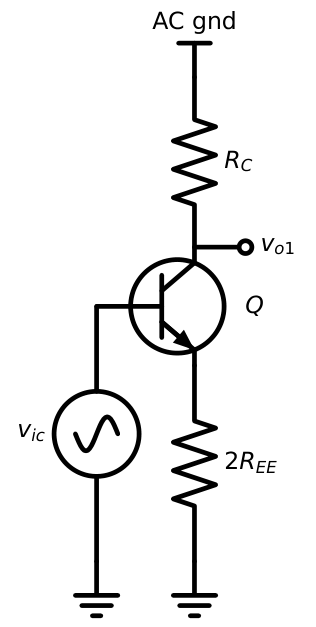
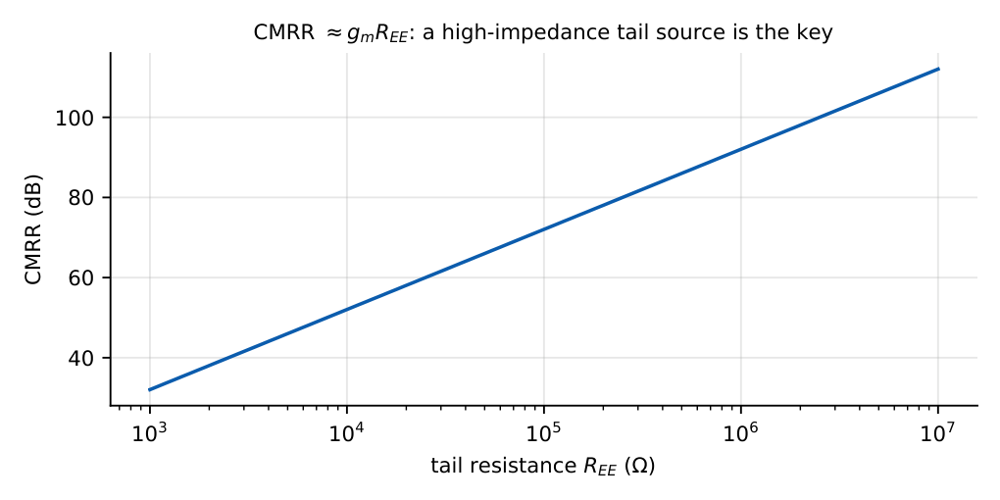
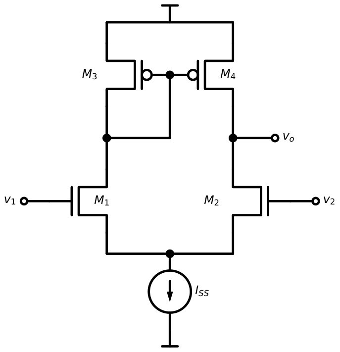
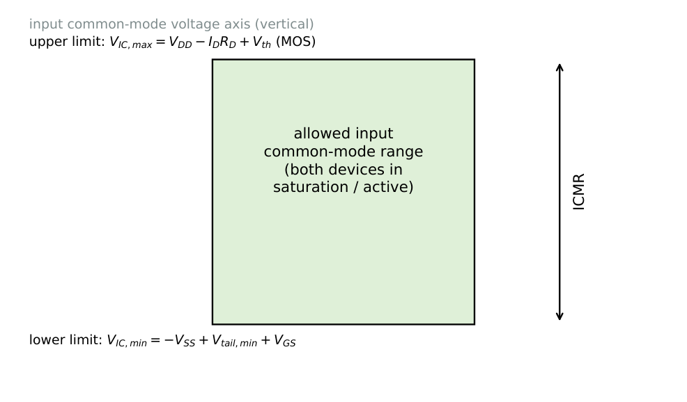

Differential Amplifiers
In this chapter
- 17.1 Differential-mode operation
- 17.2 Common-mode operation
- 17.3 BJT differential pair
- 17.4 MOS differential pair
- 17.5 Differential gain
- 17.6 Common-mode gain
- 17.7 Common-mode rejection ratio
- 17.8 Tail current source
- 17.9 Active loads
- 17.10 Output resistance
- 17.11 Input common-mode range
- 17.12 Offset voltage
- 17.13 GATE numerical problems
17.1 Differential-mode operation
A differential pair amplifies the difference of two inputs and rejects what they have in common. Decompose any input pair:
\(v_{id}=v_1-v_2\), \(v_{ic}=\dfrac{v_1+v_2}{2}\), \(v_1=v_{ic}+\dfrac{v_{id}}{2}\), \(v_2=v_{ic}-\dfrac{v_{id}}{2}\)
Output: \(v_o=A_dv_{id}+A_{c}v_{ic}\)
For purely differential drive the tail node does not move: it is a virtual ground, and each side behaves as a CE (CS) stage with its emitter (source) grounded.
17.2 Common-mode operation
For equal inputs \(v_1=v_2=v_{ic}\) both halves carry equal currents; the tail resistance sees twice the emitter current, so each half-circuit has \(2R_{EE}\) in its emitter. A good pair gives very little common-mode output.
17.3 BJT differential pair

Large-signal behaviour with \(v_{id}=v_{B1}-v_{B2}\): \[i_{C1}=\frac{\alpha I_{EE}}{1+e^{-v_{id}/V_T}},\qquad i_{C2}=\frac{\alpha I_{EE}}{1+e^{+v_{id}/V_T}},\qquad i_{C1}-i_{C2}=\alpha I_{EE}\tanh\frac{v_{id}}{2V_T}.\]

Rule of thumb: the BJT pair is linear to within 1% for \(|v_{id}|<10\) mV. Larger \(|v_{id}|\) (beyond \(\approx4V_T=100\) mV) fully steers the tail current.
17.4 MOS differential pair

Each side carries \(I_{SS}/2\) at balance. With \(V_{ov}=\sqrt{I_{SS}/k_n}\) (the overdrive of each device at balance): \[i_{D1}-i_{D2}=\frac{k_nv_{id}}{2}\sqrt{\frac{4I_{SS}}{k_n}-v_{id}^2},\qquad|v_{id}|_{max}=\sqrt2\,V_{ov}.\] The MOS pair is linear over a wider input range (a few hundred mV) but has a lower \(g_m\).
17.5 Differential gain
Using the half-circuit (\(v_{id}/2\) at each input, virtual ground at the tail):


BJT: \(A_d=\dfrac{v_{o1}-v_{o2}}{v_{id}}=g_mR_C\) (differential output); single-ended output: \(\dfrac{v_{o1}}{v_{id}}=-\dfrac{g_mR_C}{2}\)
MOS: \(A_d=g_mR_D\) (differential) or \(-\dfrac{g_mR_D}{2}\) (single-ended)
Differential input resistance: BJT \(R_{id}=2r_\pi\); MOS \(R_{id}=\infty\)
BJT pair, \(I_{EE}=1\) mA (\(I_C=0.5\) mA each), \(\beta=100\), \(R_C=10\) k\(\Omega\). \(g_m=0.5/26=19.2\) mS, \(r_\pi=5.2\) k\(\Omega\). Differential output: \(A_d=19.2\,\mathrm m\times10\,\mathrm k=192\); single-ended \(96\). \(R_{id}=2r_\pi=10.4\) k\(\Omega\).
MOS pair, \(I_{SS}=200\ \mu\)A, \(k_n=1\) mA/V\({}^2\), \(R_D=20\) k\(\Omega\). \(I_D=100\ \mu\)A; \(V_{ov}=\sqrt{2\times0.1/1}=0.447\) V; \(g_m=0.447\) mS. \(A_d=0.447\,\mathrm m\times20\,\mathrm k=8.9\) (diff.), \(4.5\) (single-ended).
17.6 Common-mode gain
For single-ended output from the common-mode half circuit (BJT, \(r_o\) neglected): \[A_{cm}=\frac{v_{o1}}{v_{ic}}=-\frac{\alpha R_C}{2R_{EE}+r_e}\approx-\frac{R_C}{2R_{EE}}.\] If both outputs are used differentially and the circuit is perfectly symmetric, \(A_{cm,diff}=0\); a mismatch \(\Delta R_C/R_C\) gives \(A_{cm,diff}\approx\dfrac{R_C}{2R_{EE}}\dfrac{\Delta R_C}{R_C}\).
17.7 Common-mode rejection ratio
\(\mathrm{CMRR}=\left|\dfrac{A_d}{A_{cm}}\right|\), \(\mathrm{CMRR(dB)}=20\log_{10}\left|\dfrac{A_d}{A_{cm}}\right|\)
Single-ended output (matched): \(\mathrm{CMRR}\approx g_mR_{EE}\) (with \(A_d=g_mR_C/2\), \(A_{cm}=R_C/2R_{EE}\))

\(g_m=19.2\) mS, \(R_{EE}=100\) k\(\Omega\): \(A_{cm}=-10\,\mathrm k/200\,\mathrm k=-0.05\), single-ended \(A_d=96\): CMRR \(=1920\) (\(65.7\) dB). With a BJT mirror tail having \(R_{EE}=1\) M\(\Omega\): \(85.7\) dB.
17.8 Tail current source
A resistor tail wastes headroom: to get \(R_{EE}=100\) k\(\Omega\) at \(I_{EE}=1\) mA would need \(100\) V. Instead, a current source (BJT/MOS mirror, Chapter 16) has \(R_{EE}=r_o\) (\(50\)–\(500\) k\(\Omega\)) with a compliance of only a few hundred mV, and can be improved by a cascode or Wilson mirror.
17.9 Active loads
Replacing \(R_C\) by a current mirror converts the pair to a high-gain stage with single-ended output and no 3 dB loss.

The mirror copies \(i_{d1}\) to the output; the output node also receives \(-i_{d2}\). So the two half signals add: \(i_o=g_m v_{id}\).
\(A_d=\dfrac{v_o}{v_{id}}=g_m\,(r_{o2}\|r_{o4})\) \(R_{out}=r_{o2}\|r_{o4}\)
\(g_m=0.447\) mS, \(r_{o2}=r_{o4}=100\) k\(\Omega\): \(A_d=0.447\,\mathrm m\times50\,\mathrm k=22\); with a resistive load of \(20\) k\(\Omega\) single-ended it would be only \(4.5\).
17.10 Output resistance
Differential output: \(R_{od}=2R_C\) (BJT) or \(2R_D\) (MOS). With active load: \(r_{o2}\|r_{o4}\), tens to hundreds of k\(\Omega\).
17.11 Input common-mode range
Range of \(v_{ic}\) over which all transistors stay in the proper region.

MOS pair, \(V_{DD}=5\), \(V_{SS}=-5\), \(R_D=10\) k, \(I_D=0.1\) mA, \(V_{th}=1\), \(k_n=1\) mA/V\({}^2\) (\(V_{GS}=1.447\) V), tail compliance \(0.5\) V. Upper: \(V_{IC,max}=V_{DD}-I_DR_D+V_{th}=5-1+1=5\) V. Lower: \(V_{IC,min}=-5+0.5+1.447=-3.05\) V. So ICMR \(=[-3.05,\,5]\) V.
17.12 Offset voltage
An ideal pair has \(v_o=0\) when \(v_1=v_2\). Mismatch produces an output offset; the input offset voltage \(V_{OS}\) is the differential input that nulls the output.
BJT: \(V_{OS}\approx V_T\left(\dfrac{\Delta R_C}{R_C}+\dfrac{\Delta I_S}{I_S}\right)\) MOS: \(V_{OS}\approx\Delta V_{th}+\dfrac{V_{ov}}2\left(\dfrac{\Delta R_D}{R_D}+\dfrac{\Delta(W/L)}{W/L}\right)\)
Bias current \(I_B=\dfrac{I_{EE}}{2(\beta+1)}\); offset current \(I_{OS}=I_{B1}-I_{B2}\).
\(\Delta R_C/R_C=1\%\): \(V_{OS}=26\,\mathrm{mV}\times0.01=0.26\) mV. Input-referred offset current \(I_{OS}\) of \(10\%\) of \(I_B=5\ \mu\)A is \(0.5\ \mu\)A.
17.13 GATE numerical problems
Q1. A differential amplifier has \(A_d=100\) and \(A_{cm}=0.01\). CMRR (dB) is .
Q2. \(I_{EE}=2\) mA, \(R_C=5\) k\(\Omega\), \(V_T=26\) mV, single-ended output. \(|A_d|=\) .
Q3. \(v_1=3.1\) V, \(v_2=2.9\) V. \(v_{id}=\) V and \(v_{ic}=\) V.
Q4. \(r_\pi=2.6\) k\(\Omega\). The differential input resistance of the BJT pair is k\(\Omega\).
Q5. With an ideal tail current source (\(R_{EE}=\infty\)) the CMRR of a perfectly matched pair is (A) 0 (B) 1 (C) \(\infty\) (D) \(g_mR_C\).
Q6. The differential gain of a MOS pair with active mirror load is (A) \(g_mR_D/2\) (B) \(g_m(r_{o2}\|r_{o4})\) (C) \(g_m R_D\) (D) \(2g_mr_o\).
Answers: Q1: \(10^4\to80\) dB. Q2: \(I_C=1\) mA, \(g_m=38.5\) mS; single-ended \(|A_d|=g_mR_C/2=96\). Q3: \(0.2\) V, \(3.0\) V. Q4: \(5.2\) k\(\Omega\). Q5: (C). Q6: (B).
- Compute CMRR (dB) for \(g_m=40\) mS, \(R_{EE}=50\) k\(\Omega\). [66 dB]
- MOS pair with \(I_{SS}=100\ \mu\)A, \(V_{ov}=0.2\) V: \(g_m\)? [0.5 mS]
- BJT pair, \(I_{EE}=0.2\) mA, \(\beta=100\): \(I_B\) each? [0.99 \(\mu\)A]
- Explain why mirror loads double the gain compared with a single-ended resistor load. [Both \(i_{d1}\) and \(i_{d2}\) contribute at the output]